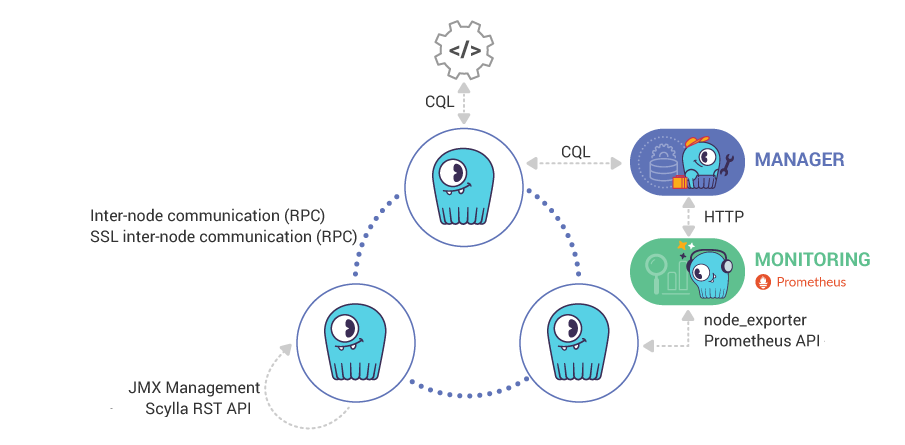
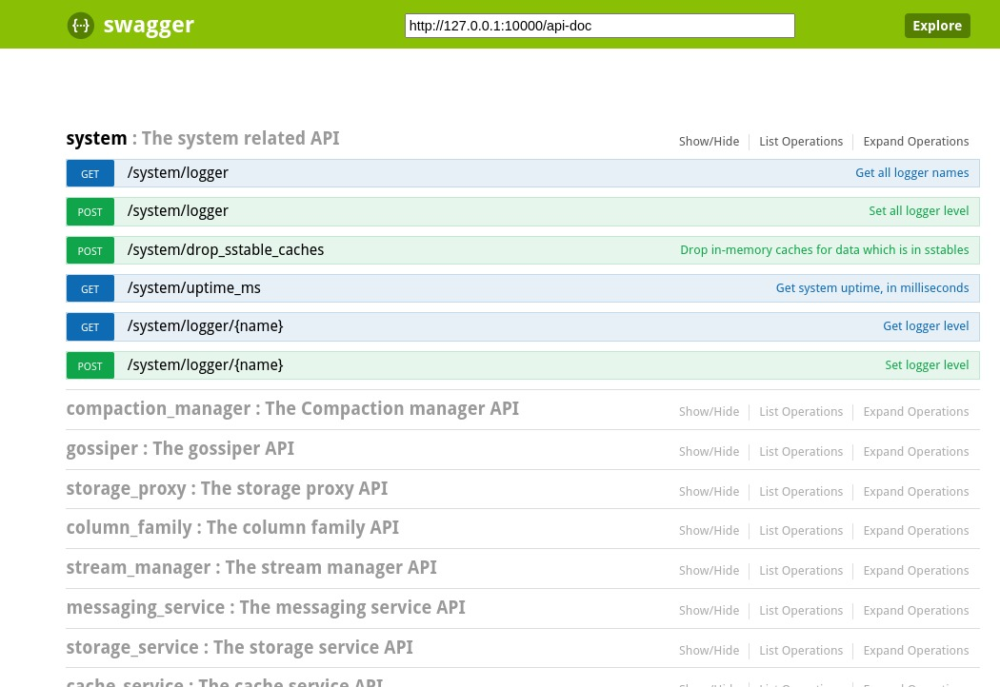

Was this page helpful?
Caution
You're viewing documentation for a previous version. Switch to the latest stable version.
Administration Guide¶
For training material, also check out the Admin Procedures lesson on ScyllaDB University.
System requirements¶
Make sure you have met the System Requirements before you install and configure ScyllaDB.
Download and Install¶
See the getting started page for info on installing ScyllaDB on your platform.
System configuration¶
See System Configuration Guide for details on optimum OS settings for ScyllaDB. (These settings are performed automatically in the ScyllaDB packages, Docker containers, and Amazon AMIs.)
ScyllaDB Configuration¶
ScyllaDB configuration files are:
Installed location |
Description |
|---|---|
|
Server startup options |
|
Main ScyllaDB configuration file |
|
Rack & dc configuration file |
Check your current version of ScyllaDB¶
This command allows you to check your current version of ScyllaDB. Note that this command is not the nodetool version command which reports the CQL version. If you are looking for the CQL or Cassandra version, refer to the CQLSH reference for SHOW VERSION.
scylla --version
Output displays the ScyllaDB version. Your results may differ.
4.4.0-0.20210331.05c6a40f0
Address Configuration in ScyllaDB¶
The following addresses can be configured in scylla.yaml:
Address Type |
Description |
|---|---|
listen_address |
Address ScyllaDB listens for connections from other nodes. See storage_port and ssl_storage_ports. |
rpc_address |
Address on which ScyllaDB is going to expect CQL client connections. See rpc_port, native_transport_port and native_transport_port_ssl in the Networking parameters. |
broadcast_address |
Address that is broadcasted to tell other ScyllaDB nodes to connect to. Related to listen_address above. |
broadcast_rpc_address |
Address that is broadcasted to tell the clients to connect to. Related to rpc_address. |
seeds |
The broadcast_addresses of the existing nodes. You must specify the address of at least one existing node. |
endpoint_snitch |
Node’s address resolution helper. |
api_address |
Address for REST API requests. See api_port in the Networking parameters. |
prometheus_address |
Address for Prometheus queries. See prometheus_port in the Networking parameters and ScyllaDB Monitoring Stack for more details. |
replace_node_first_boot |
Host ID of a dead node this ScyllaDB node is replacing. Refer to Replace a Dead Node in a ScyllaDB Cluster for more details. |
Note
When the listen_address, rpc_address, broadcast_address, and broadcast_rpc_address parameters are not set correctly, ScyllaDB does not work as expected.
scylla-server¶
The scylla-server file contains configuration related to starting up the ScyllaDB server.
scylla.yaml¶
scylla.yaml is equivalent to the Apache Cassandra cassandra.yaml configuration file and it is compatible with relevant parameters. Below is a subset of scylla.yaml with parameters you are likely to update. For a full list of parameters, look at the file itself.
# The name of the cluster. This is mainly used to prevent machines in
# one logical cluster from joining another.
cluster_name: 'Test Cluster'
# This defines the number of tokens randomly assigned to this node on the ring
# The more tokens, relative to other nodes, the larger the proportion of data
# that this node will store. You probably want all nodes to have the same number
# of tokens assuming they have equal hardware capability.
num_tokens: 256
# Directory where Scylla should store data on disk.
data_file_directories:
- /var/lib/scylla/data
# commit log. when running on magnetic HDD, this should be a
# separate spindle than the data directories.
commitlog_directory: /var/lib/scylla/commitlog
# schema commit log. A special commitlog instance
# used for schema and system tables.
# When running on magnetic HDD, this should be a
# separate spindle than the data directories.
# schema_commitlog_directory: /var/lib/scylla/commitlog/schema
# seed_provider class_name is saved for future use.
# A seed address is mandatory.
seed_provider:
# The addresses of hosts that will serve as contact points for the joining node.
# It allows the node to discover the cluster ring topology on startup (when
# joining the cluster).
# Once the node has joined the cluster, the seed list has no function.
- class_name: org.apache.cassandra.locator.SimpleSeedProvider
parameters:
# In a new cluster, provide the address of the first node.
# In an existing cluster, specify the address of at least one existing node.
# If you specify addresses of more than one node, use a comma to separate them.
# For example: "<IP1>,<IP2>,<IP3>"
- seeds: "127.0.0.1"
# Address or interface to bind to and tell other Scylla nodes to connect to.
# You _must_ change this if you want multiple nodes to be able to communicate!
#
# Setting listen_address to 0.0.0.0 is always wrong.
listen_address: localhost
# Address to broadcast to other Scylla nodes
# Leaving this blank will set it to the same value as listen_address
# broadcast_address: 1.2.3.4
# port for the CQL native transport to listen for clients on
# For security reasons, you should not expose this port to the internet. Firewall it if needed.
native_transport_port: 9042
# Uncomment to enable experimental features
# experimental: true
By default scylla.yaml is located at /etc/scylla/scylla.yaml. Note that the file will open as read-only unless you edit it as the root user or by using sudo.
scylla.yaml Required Settings¶
The following configuration items must be set
Item |
Content |
|---|---|
cluster_name |
Name of the cluster, all the nodes in the cluster must have the same name |
seeds |
IP address of an existing node in the cluster. It allows a new node to discover the cluster ring topology when joining the cluster. |
listen_address |
IP address that the Scylla use to connect to other Scylla nodes in the cluster |
rpc_address |
IP address of the interface for CQL client connections |
Enabling Experimental Features¶
There are two ways to enable experimental features:
Enable all experimental features (which may be risky)
Enable only the features you want to try (available in Scylla Open Source from version 3.2)
Enable All Experimental Features¶
To enable all experimental features to add to the scylla.yaml:
experimental: true
Enable Specific Experimental Features¶
To enable specific experimental features, add to the scylla.yaml the list of experimental features you want to enable, by setting the experimental_features array.
The list of valid elements for this array can be obtained from scylla --help.
Note that this list is version specific. Your results may be different.
For example:
experimental_features:
- cdc
- lwt
IPv6 Addresses¶
You can use IPv6 addresses wherever an IPv4 address is used, including client-to-node and node-to-node communication, Scylla Manager to Scylla nodes (Scylla Manager Agent), and Monitoring to nodes.
For example:
- seeds: "2a05:d018:223:f00:971d:14af:6418:fe2d"
- listen_address: 2a05:d018:223:f00:971d:14af:6418:fe2d
- broadcast_rpc_address: 2a05:d018:223:f00:971d:14af:6418:fe2d
To enable IPv6 addressing, set the following parameter in scylla.yaml:
enable_ipv6_dns_lookup: true
To read the rest of the Administration Guide (from the top).
To go to the System Configuration documentation, click here.
Compression¶
In ScyllaDB, you can configure compression at rest and compression in transit. For compression in transit, you can configure compression between nodes or between the client and the node.
Client - Node Compression¶
Compression between the client and the node is set by the driver that the application is using to access ScyllaDB.
For example:
Refer to the Drivers Page for more drivers.
Internode Compression¶
Internode compression is configured in the scylla.yaml
internode_compression controls whether traffic between nodes is compressed.
all - all traffic is compressed.
dc - traffic between different datacenters is compressed.
none - nothing is compressed (default).
Configuring TLS/SSL in scylla.yaml¶
ScyllaDB versions 1.1 and greater support encryption between nodes and between client and node. See the ScyllaDB ScyllaDB TLS/SSL guide: for configuration settings.
Networking¶
The ScyllaDB ports are detailed in the table below. For ScyllaDB Manager ports, see the ScyllaDB Manager Documentation.
ScyllaDB uses the following ports:
Port |
Description |
Protocol |
|---|---|---|
9042 |
CQL (native_transport_port) |
TCP |
9142 |
SSL CQL (secure client to node) |
TCP |
7000 |
Inter-node communication (RPC) |
TCP |
7001 |
SSL inter-node communication (RPC) |
TCP |
10000 |
ScyllaDB REST API |
TCP |
9180 |
Prometheus API |
TCP |
9100 |
node_exporter (Optionally) |
TCP |
19042 |
Native shard-aware transport port |
TCP |
19142 |
Native shard-aware transport port (ssl) |
TCP |
Note
For ScyllaDB Manager ports, see the ScyllaDB Manager documentation.
All ports above need to be open to external clients (CQL) and other nodes (RPC). REST API port can be kept closed for incoming external connections.
Advanced networking¶
It is possible that a client, or another node, may need to use a different IP address to connect to a ScyllaDB node from the address that the node is listening on. This is the case when a node is behind port forwarding. ScyllaDB allows for setting alternate IP addresses.
Do not set any IP address to 0.0.0.0.
Address Type |
Description |
Default |
|---|---|---|
listen_address (required) |
Address ScyllaDB listens for connections from other nodes. See storage_port and ssl_storage_ports. |
No default |
rpc_address (required) |
Address on which ScyllaDB is going to expect CQL clients connections. See rpc_port, native_transport_port and native_transport_port_ssl in the Networking parameters. |
No default |
broadcast_address |
Address that is broadcasted to tell other ScyllaDB nodes to connect to. Related to listen_address above. |
listen_address |
broadcast_rpc_address |
Address that is broadcasted to tell the clients to connect to. Related to rpc_address. |
rpc_address |
If other nodes can connect directly to listen_address, then broadcast_address does not need to be set.
If clients can connect directly to rpc_address, then broadcast_rpc_address does not need to be set.
Note
For tips and examples on how to configure these addresses, refer to How to Properly Set Address Values in scylla.yaml
Core dumps¶
On RHEL and CentOS, the Automatic Bug Reporting Tool conflicts with ScyllaDB coredump configuration. Remove it before installing ScyllaDB: sudo yum remove -y abrt
ScyllaDB places any core dumps in var/lib/scylla/coredump. They are not visible with the coredumpctl command. See the System Configuration Guide for details on core dump configuration scripts. Check with ScyllaDB support before sharing any core dump, as they may contain sensitive data.
Schedule fstrim¶
ScyllaDB sets up daily fstrim on the filesystem(s), containing your ScyllaDB commitlog and data directory. This utility will discard, or trim, any blocks no longer in use by the filesystem.
Experimental Features¶
ScyllaDB Open Source uses experimental flags to expose non-production-ready features safely. These features are not stable enough to be used in production, and their API will likely change, breaking backward or forward compatibility.
In recent ScyllaDB versions, these features are controlled by the experimental_features list in scylla.yaml, allowing one to choose which experimental to enable.
For example, some of the experimental features in ScyllaDB Open Source 4.5 are: udf, alternator-streams and raft.
Use scylla --help to get the list of experimental features.
ScyllaDB Enterprise and ScyllaDB Cloud do not officially support experimental Features.
Monitoring¶
ScyllaDB exposes interfaces for online monitoring, as described below.
Monitoring Interfaces¶
Monitoring Stack¶
Admin REST API¶
ScyllaDB exposes a REST API to retrieve administrative information from a node and execute administrative operations. For example, it allows you to check or update configuration, retrieve cluster-level information, and more.
The nodetool CLI tool uses the REST API to interact with the ScyllaDB process.
You can interact with the REST API directly using curl, ScyllaDB’s CLI for REST API, or the Swagger UI.
Swagger UI¶
Warning
Do not expose the REST API externally for production systems.
The following example is only for demonstration, as it exposes the REST API externally and will allow external access to administration-level information and operations on your cluster. The API is by default bound to an internal IP (127.0.0.1), blocked for external connections.
You can interact with the REST API using the Swagger UI at your-ip:10000/ui.
The following example shows using the Swagger UI with Docker.
Run:
docker run --name some-scylla -p 10000:10000 -d scylladb/scylla:5.0.4 --api-address 0.0.0.0
Go to http://localhost:10000/ui/.

CLI for REST API¶
ScyllaDB ships with scylla-api-client, a lightweight tool that provides a command-line interface
for the ScyllaDB API. The tool allows you to:
List the API functions with their parameters and print detailed help for each function.
Invoke the API commands using the command line.
When invoking a function, scylla-api-client performs basic validation of the function arguments and
prints the result to the standard output. You can use commonly available command line utilities
to print the results in the JSON format.
To avoid errors, you should prefer scylla-api-client over curl and similar HTTP tools for interacting
with the ScyllaDB REST API.
Usage¶
Run scylla-api-client --help for information about all the available options.
Examples:
scylla-api-client --list-modules- Shows all the API modules.scylla-api-client --list-module-commands system- Shows all the API commands for thesystemmodule.scylla-api-client system uptime_ms- Gets the system uptime (in milliseconds).scylla-api-client system log POST --message "hello world" --level warn- Writes the “hello world” message to the ScyllaDB log using the “warn” logging level.
Un-contents¶
ScyllaDB is designed for high performance before tuning, for fewer layers that interact in unpredictable ways, and to use better algorithms that do not require manual tuning. The following items are found in the manuals for other data stores but do not need to appear here.
Configuration un-contents¶
Generating tokens
Configuring virtual nodes
Operations un-contents¶
Tuning Bloom filters
Data caching
Configuring memtable throughput
Configuring compaction
Compression
Testing compaction and compression¶
Tuning Java resources
Purging gossip state on a node
Help with ScyllaDB¶
Contact Support, or visit the ScyllaDB Community page for peer support.
© 2016, The Apache Software Foundation.
Apache®, Apache Cassandra®, Cassandra®, the Apache feather logo and the Apache Cassandra® Eye logo are either registered trademarks or trademarks of the Apache Software Foundation in the United States and/or other countries. No endorsement by The Apache Software Foundation is implied by the use of these marks.